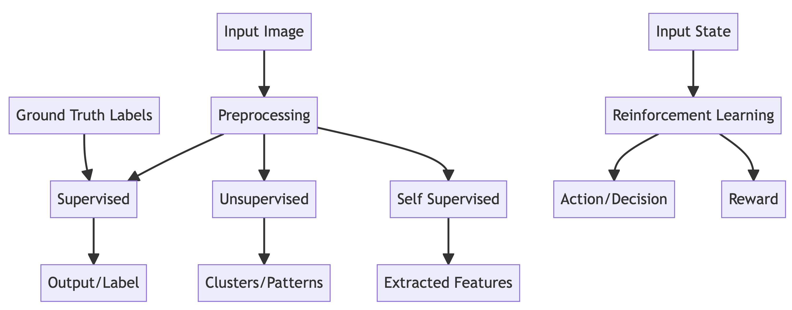

Annex to introduction content#
Objectives#
The goal of this notebook is to teach some basics of machine learning, deep learning and the TensorFlow framework. Here you will find both the explanations of key concepts and the illustrative programs.
What is Machine Learning?#
Machine learning (ML) is a subset of artificial intelligence (AI), which in broad terms, is defined as the ability of a machine to simulate intelligent human behavior.
The intention of AI and by relation, ML, is to enable machines to learn patterns and automate certain tasks with learned knowledge. Machine learning was coined in the 1950s by AI pioneer Arthur Samuel as the “field of study that gives computers the ability to learn without explicitly being programmed.”
To illustrate the importance of ML, we can compare traditional programming and ML. Whereas the former requires humans to create the program with detailed instructions for the computer to follow, ML allows the computer to program itself and learn the instructions through self-guided interaction and analysis. This difference confers benefits in many ways, including:
Less time is needed to run model predictions than to develop a logical system to process data in the same way,
Less time is needed to run model predictions than for a human image interpreter to create labeled data,
For a given dataset, a model will return the same result, whereas human interpretations will vary.
At its core, machine learning is founded on the consumption of data, and lots of it. Generally speaking, more data results in a smarter model. The model trains itself to recognize patterns and features in the data, which then enables it to make predictions about related subject matter.
Humans still have a role in this process. Much of this role entails curating a high quality dataset. In the case of supervised machine learning, this requires samples that have informative signals and labels that accurately reflect the phenomena of interest. Humans also need to select the appropriate ML algorithm and supply it with useful information. Furthermore, human programmers can help an ML model train more efficiently by tuning certain parameters.
There are several subcategories of machine learning. The following chart compares how data flows through different kinds of ML models.

Supervised machine learning involves training a model with labeled data sets that explicitly give examples of predictive features and their target attribute(s). Most geospatial ML applications are of this type, such as the task of supplying ground truth labels of deforestation events with corresponding satellite imagery to a model during training so that it can predict deforestation events in satellite imagery absent of labels.
Unsupervised machine learning involves tasking a model to search for patterns in data without the guidance of labels. This is often used to explore data and find patterns that human programmers aren’t explicitly looking for, or when ground truth labels don’t exist. As another geospatial example, unsupervised ML might be used to classify land cover without expert knowledge of a specific terrain and its land use categories. For classification, one would manually assign labels to clusters after an unsupervised algorithm is run to find clusters in a dataset.
Self-supervised machine learning is very new and growing in its application. It sits at the intersection of the former two ML types, and is revolutionary in its ability to perform like a supervised approach albeit with far less labeled data. It does this by learning common sense, which many consider the “dark matter of artificial intelligence” (Facebook AI). Common sense enables people to learn new concepts or skills without requiring massive amounts of guidance or teaching for every single objective. Rather, common sense is founded by a wealth of background knowledge gathered through observations and experience over time. Self-supervised ML leverages an understanding of the structure of the data by learning supervisory signals from the data itself, such that it can infer any withheld portion of the data from the remaining data. A geospatial example of this might be predicting urban structures that are diverse across different geographies, yet descriptive enough for a human interpreter to infer their identity using common sense.
Reinforcement machine learning, at last, is a form of ML in which machines learn by way of trial and error to perform optimized actions by being rewarded or penalized. Reinforcement learning can produce models capable of autonomous decision-making and action by iteratively giving feedback on the relative correctness of its decisions and actions.
Important
There are also some problems where machine learning is uniquely equipped to learn insights and make decisions when a human might not, such as drawing relationships from combined spectral indices in a complex terrain.
What are Neural Networks?#
Artificial neural networks (ANNs) are a specific, biologically-inspired class of machine learning algorithms. They are modeled after the structure and function of the human brain, in which tens of billions of nodes called neurons are connected through synapses. One can think of the neuron as an elementary processing unit, which processes incoming data and passes along a derived message if the data is weighed to be useful. The many synapses, or message pathways, in a neural network are not uniform in strength, and can become weaker or stronger as more data is consumed and more feedback is received over time. That characteristic is in part why neurons are programmable and responsive to granular and/or system level changes so impressively.
{kind=link}
Biological neuron (from https://training.seer.cancer.gov/anatomy/nervous/tissue.html).#
ANNs are essentially program that makes decisions by weighing the evidence and responding to feedback. By varying the input data, types of parameters and their values, we can get different models of decision-making.

Basic neural network from https://towardsdatascience.com/machine-learning-for-beginners-an-introduction-to-neural-networks-d49f22d238f9.#
In network architectures, neurons are grouped in layers, with synapses traversing the interstitial space between neurons in one layer and the next. As data passes through successive layers of the network, features are derived, combined and interpreted in a low-level to high-level trajectory. For example, in the intial layers of a network, you might see a model begin to detect crude lines and edges, and then in the intermediate layers you see the lines combined to form a building, and then the surrounding context or building color or texture might be involved in the latter layers to predict the the type of building.
What are Convolutional Neural Networks?#
A Convolutional Neural Network (ConvNet/CNN) is a form of deep learning inspired by the organization of the human visual cortex, in which individual neurons respond to stimuli within a constrained region of the visual field known as the receptive field. Several receptive fields overlap to account for the entire visual area.
In artificial CNNs, an input matrix such as an image is given importance per various aspects and objects in the image through a moving, convoling receptive field. Very little pre-processing is required for CNNs relative to other classification methods as the need for upfront feature-engineering is removed. Rather, CNNs learn the correct filters and consequent features on their own, provided enough training time and examples.

Convolution of a kernal over an input matrix from https://towardsdatascience.com/intuitively-understanding-convolutions-for-deep-learning-1f6f42faee1.#
What is a kernel/filter?#
A kernel is matrix smaller than the input. It acts as a receptive field that moves over the input matrix from left to right and top to bottom and filters for features in the image.
What is stride?#
Stride refers to the number of pixels that the kernel shifts at each step in its navigation of the input matrix.
What is a convolution operation?#
The convolution operation is the combination of two functions to produce a third function as a result. In effect, it is a merging of two sets of information, the the kernel and the input matrix. The dot products produced by the kernel and the input matrix at each stride are the new values in the resulting matrix, also known as a feature map.

Convolution of a kernal over an input matrix from https://theano-pymc.readthedocs.io/en/latest/tutorial/conv_arithmetic.html.#
Convolution operation using 3D filter#
An input image is often represented as a 3D matrix with a dimension for width (pixels), height (pixels), and depth (channels). In the case of an optical image with red, green and blue channels, the kernel/filter matrix is shaped with the same channel depth as the input and the weighted sum of dot products is computed across all 3 dimensions.
What is padding?#
After a convolution operation, the feature map is by defualt smaller than the original input matrix. To maintain the same spatial dimensions between input matrix and output feature map, we may pad the input matrix with a border of zeroes or ones. There are two types of padding:
Same padding: a border of zeroes or ones is added to match the input/output dimensions
Valid padding: no border is added and the output dimensions are not matched to the input
We use same padding often because it allows us to construct deeper networks. Without it, the progressive downsizing of the feature maps would constrain how many convolutional layers could be used before the feature map becomes too small.

What is Deep Learning?#
Deep learning is defined by neural networks with depth, i.e. many layers and connections. The reason for why deep learning is so highly performant lies in the degree of abstraction made possible by feature extraction across so many layers in which each neuron, or processing unit, is interacting with input from neurons in previous layers and making decisions accordingly. The deepest layers of a network once trained can be capabale inferring highly abstract concepts, such as what differentiates a school from a house in satellite imagery.
Cost of deep learning
Deep learning requires a lot of data to learn from and usually a significant amount of computing power, so it can be expensive depending on the scope of the problem.
Training and Testing Data#
The dataset (e.g. all images and their labels) are split into training, validation and testing sets. A common ratio is 70:20:10 percent, train:validation:test. If randomly split, it is important to check that all class labels exist in all sets and are well represented.
Important
Why do we need validation and test data? Are they redundant? We need separate test data to evaluate the performance of the model because the validation data is used during training to measure error and therefore inform updates to the model parameters. Therefore, validation data is not unbiased ot the model. A need for new, wholly unseen data to test with is required.
Activation Function, Weights and Biases#
In a neural network, neurons in one layer are connected to neurons in the next layer. As information passes from one neuron to the next, the information is conditioned by the weight of the synapse and is subjected to a bias. As it turns out, these variables, the weights and biases, play a significant role in determining if the information passes further beyond the current neuron.
The activation function decides whether or not the output from one neuron is useful or not based on a threshold value, and therefore, whether it will be carried from one layer to the next.
Weights, as a reminder, control the signal (or the strength of the connection) between two neurons in two consecutive layers. In other words, a weight decides how much influence the information coming from one neuron will have on the decision made by the next neuron. Smaller weights correlate with less influence from one neuron to the next.
Biases are values which help determine whether or not the activation output from a neuron is going to be passed forward through the network. Each Neuron has a bias, and it is the combination of the weighted sum from the input layer (where weighted sum = weights * input matrix) + the bias that decides the activation of a neuron. In the absence of a bias value, the neuron may not be activated by considering only the weighted sum from input layer. For example, if the weighted sum from the input layer is negative, and the activation function only fires when the weighted sum is greater than zero, the neuron won’t fire. If the neuron doesn’t fire / is not activated, the information from this neuron is not passed through rest of neural network. Adding a bias term of 1, for example, to the weighted sum would make the output of the neuron positive, in doing so allowing the neuron to fire and creating more range with respect to weights which will activate and hence be used throughout the network. Stated simply, bias increases the flexibility of the model by giving credence to a larger range of weights.

During training, the weights and biases are learned and updated using the training and validation dataset to fit the data and reduce error of prediction values relative to target values.
Important
Activation function: decides whether or not the output from one neuron is useful or not
Weights: control the signal between neurons in consecutive layers
Biases: a threshold value that determines the activation of each neuron
Weights and biases are the learnable parameters of a deep learning model
Hyper-parameters#
Importantly, neural networks train in cycles, where the input data passes through the network, a relationship between input data and target values is learned, a prediction is made, the prediction value is measured for error relative to its true value, and the errors are used to inform updates to parameters in the network, feeding into the next cycle of learning and prediction using the updated information. Bear in mind, unless your dataset is very small, it has to be fed to the model in smaller parts (known as batches) in order to avoid memory overload or resource exhaustion.
The learning rate controls how much we want the model to change in response to the estimated error after each training cycle The batch size determines the portion of our training dataset that can be fed to the model during each cycle. Stated otherwise, batch size controls the number of training samples to work through before the model’s internal parameters are updated.
The learning rate is a hyperparameter that controls how much the model may change in response to the estimated error each time the model weights are updated. Choosing the learning rate is challenging as a value too small may result in a long training process that could take a long time to converge on an optimal set of parameters, whereas a value too large may result in learning a sub-optimal set of weights too fast, getting stuck at a local optimum and consequently missing the global optimum.
Think of a batch as a for-loop iterating over one or more samples and making predictions. At the end of the batch’s forward pass through the network, the predictions are compared to the expected output variables and an error is calculated. The error is back propogated through the network to adjust the parameters with respect to the error. A training dataset can be divided into one or more batches.
An epoch is defined as the point when all training samples, aka the entire dataset, has passed through the neural network once. The number of epochs controls how many times the entire dataset is cycled through and analyzed by the neural network. We should expect to see the error progressively reduce throughout the course of successive epochs.
The optimization function is really important. It’s what we use to change the attributes of your neural network such as weights and biases in order to reduce the losses. The goal of an optimization function is to minimize the error produced by the model.
The loss function, also known as the cost function, measures how much the model needs to improve based on the prediction errors relative to the true values during training.
The accuracy metric measures the performance of a model. For example, a pixel to pixel comparison for agreement on class.
Note: the activation function is also a hyper-parameter.
Common Deep Learning Algorithms for Computer Vision#
Image classification: classifying whole images, e.g. image with clouds, image without clouds
Object detection: identifying locations of objects in an image and classifying them, e.g. identify bounding boxes of cars and planes in satellite imagery
Semantic segmentation: classifying individual pixels in an image, e.g. land cover classification
Instance segmentation: classifying individual pixels in an image in terms of both class and individual membership, e.g. detecting unique agricultural field polygons and classifying them
Generative Adversarial: a type of image generation where synthetic images are created from real ones, e.g. creating synthetic landscapes from real landscape images
Semantic Segmentation#
To pair with the content of these tutorials, we will demonstrate semantic segmentation (supervised) to map land use categories and illegal gold mining activity.
Semantic = of or relating to meaning (class)
Segmentation = division (of image) into separate parts
U-Net Segmentation Architecture#
Semantic segmentation is often distilled into the combination of an encoder and a decoder. An encoder generates logic or feedback from input data, and a decoder takes that feedback and translates it to output data in the same form as the input.
The U-Net model, which is one of many deep learning segmentation algorithms, has a great illustration of this structure. In Fig. 8, the encoder is on the left side of the model. It consists of consecutive convolutional layers, each followed by ReLU and a max pooling operation to encode feature representations at multiple scales. The encoder can be represented by most feature extraction networks designed for classification. In the initial convolutional layers, the filters learn low level features in an image such as lines or edges. Progressing through further layers, the filters learn more abstract features such as combinations of lines and colors. The encoder downsamples as it moves from extracting low-level, granular features to high level abstract features.
The decoder, on the right side of the Fig. 8 diagram, is tasked to semantically project the discriminative features learned by the encoder onto the original pixel space to render a dense classification. The decoder consists of deconvolution and concatenation with corresponding features from the encoder followed by regular convolution operations.
Deconvolution in a CNN is used to restore the dimensions of feature maps to the original size of the input image. This operation is also referred to as transposed convolution, upconvolution or upsampling. With deonvolution, the goal is to progressively upsample feature maps to pair with the size of the corresponding concatenation blocks from the encoder. You may see the gray and green arrows, where we concatenate two feature maps together. The main contribution of U-Net in this sense is that while upsampling in the network we are also concatenating the higher resolution feature maps from the encoder network with the upsampled features in order to better learn representations with following convolutions. Since upsampling is a sparse operation we need a good prior from earlier stages to better represent the localization.
Following the decoder is the final classification layer, which computes the pixel-wise classification for each cell in the final feature map.
These models are often applied to computer vision problems where regions of pixel space are representative of a unique class. A semantic segmentation model enables direct localization and quantification of predicted classes.
Also to note, batch normalization is used as a way of accelerating training and many studies have found it to be important to use to obtain state-of-the-art results on benchmark problems. With batch normalization, each element of a layer in a neural network is normalized to zero mean and unit variance, based on its statistics within a mini-batch.
ReLU is an operation, an activation function to be specific, that induces non-linearity. This function intakes the feature map from a convolution operation and remaps it such that any positive value stays exactly the same, and any negative value becomes zero.

Max pooling is used to summarize a feature map and only retain the important structural elements, foregoing the more granular detail that may not be significant to the modeling task. This helps to denoise the signal and helps with computational efficiency. It works similar to convolution in that a kernel with a stride is applied to the feature map and only the maximum value within each patch is reserved.


Auxiliary Notes#
Generally speaking, after training the model is complete, we can use the same evaluation metrics for deep learning as we do for classical ML. So, as an example, for segmentation, confusion matrix and f1-score are applicable in both classical ML (i.e. random forest) and in deep learning (i.e. semantic segmentation).
Yet, still there is the question of when we should use deep learning instead of classical ML. One of the great strengths of deep learning is its built in feature extraction, which can handle very complex and /or abstract data. A good rule of thumb: when either 1) the data is very complex and we do not want to do a lot of processing to define the features manually, or 2) when the task suits well to automation and scaling beyond human processing speed, deep learning is a good choice. In contrast, when the data is relatively uniform and/or the feature space is not too noisy, or, when our input data is not exceedingly vast, then classical ML is probably all that is necessary.
Typically, when selecting a model architecture, you start with what are you trying to model (is it to classify an image, detect an object, so on so forth) and then, within that associated family of algorithms, you check for the state of the art model at the present time. Developers all over build and test their models against standard benchmark datasets so as to compare performances fairly. You can reference the performance scores of the different architectures to decide which is the best, but you’ll want to keep in mind the notion of architecture complexity. Some might perform extremely well, but the architectures under the hood are enormous and computationally expensive to use. A simple model architecture will comparatively cost less than a complex one, so identifying the right balance of complexity and performance in relation to training time and executional cost is important to factor in.
Your choice of a loss function is a function of the problem itself. If it’s a binary classification problem, you might choose binary cross-entropy. If it’s a multi-class classification problem, you might choose multi-class cross entropy. In both, cross entropy entails comparing the predicted class probabilities for, let’s say a given pixel, and choosing the highest probability class. We will use an adaption on this loss function for a class-imbalanced dataset. It’s called focal loss and uses class weighting based on frequency in the dataset to tonify the losses associated with each class.
Lastly, when we instantiate the model, we can initialize the weights to random values or all zeroes and let the model learn the correct values. Or, we can adopt the trained weights from another model to expedite the learning progress. Remember, in the initial convolutional layers, it’s just simple features that are learned - like combinations of lines and colors - and since that is generally extensible to many image-related applications, we can adopt the weights trained to learn those low-level features and start with that foundational knowledge. This makes it such that the network only really needs to learn the high level features unique to your training data. More on this later on.